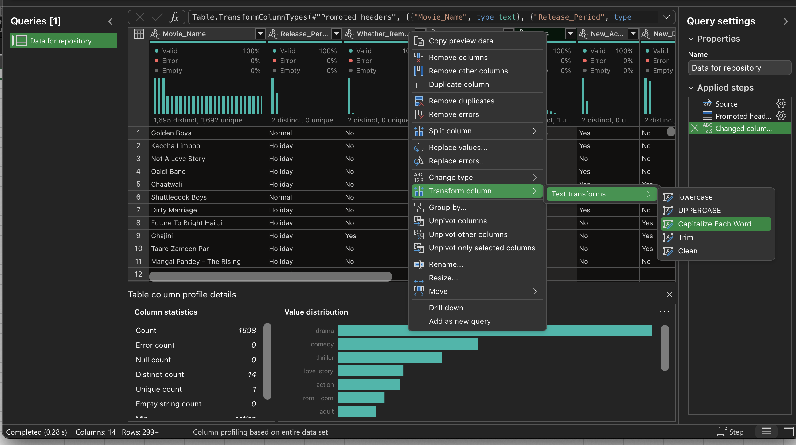
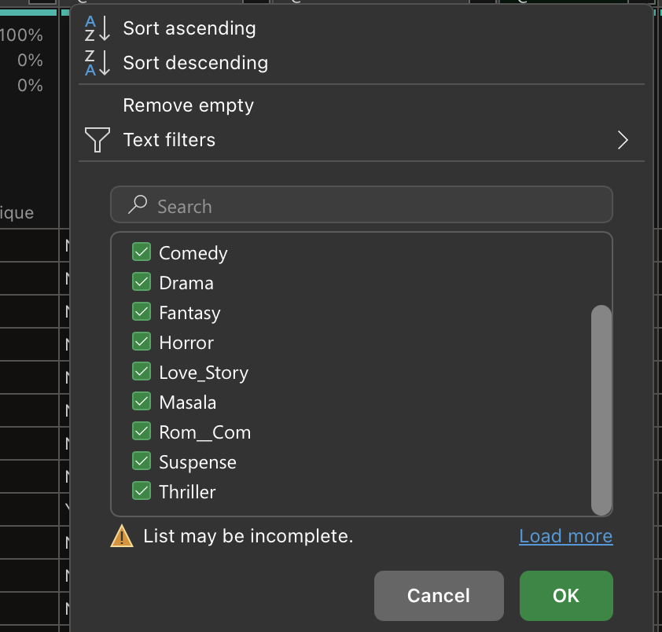
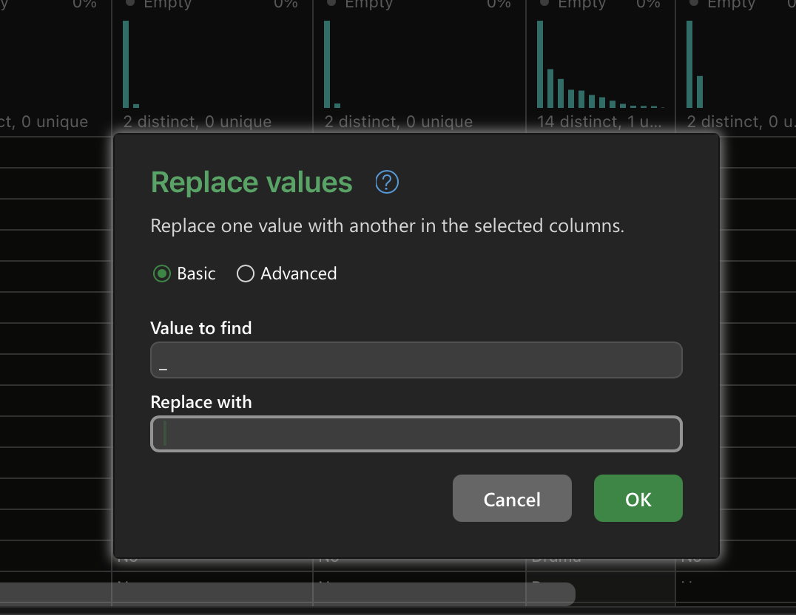
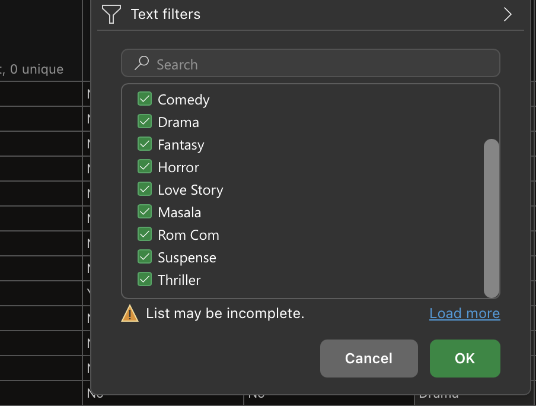
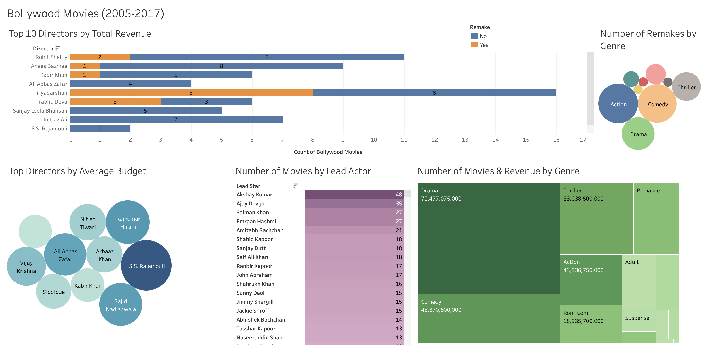

Bollywood Movies
Tools: Excel, Power Query, Tableau
Tableau Public Dashboard
Project Files
Overview
I grew up watching Bollywood Movies and was interested in exploring a movie dataset. I was able to find a Kaggle dataset that included Bollywood movies released from 2005 to 2017. The dataset included Revenue & Budget in Indian Rupees, Directors, Lead Actors, Music Directors, genres, whether the movie was a remake, and a few other fields.
Data Preparation
I downloaded the dataset from Kaggle as a CSV file. Then, I used Power Query to extract, transform, and load the data. I opened Power Query in Excel, connected to the CSV, and hit transform to clean the data before I loaded it into the Excel worksheet.
Changes I made using Power Query:
1. Proper cased the genres by using Capitalize Each Word

2. Changed Rom_Com to Rom Com and Love_Story to Love Story (Find underscores & Replace with a single space)



3. Changed Love Story to Romance using Find and Replace

Dashboard
Insights
An interesting find from the dashboard was that half of the movies Priyadarshan, one of the top 10 directors by revenue, made from 2005-2017 were remakes. It was also interesting to see that Akshay Kumar had 48 movies within 12 years in which he was a lead actor, which means he filmed at least 4 movies per year on average, if we take into account movies he was not a lead actor in.
Using the tooltip for Number of Movies & Revenue by Genre chart, I learned that 639 drama movies and 284 comedy movies were released in the same time period. That is more than double the number of dramas compared to comedies. Using the bubble chart, we can see that most remakes were in the Action genre.
Interactive Dashboard
*Disclaimer: The embedded dashboard below may not show if Tableau Public is blocked on your internal network*